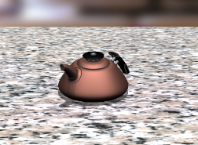

Apply a System Scene
-
Open des07_teapot.
-
Orient the view to Trimetric.

-
On the Resource bar, click System Scenes
 .
.
-
Drag the Granite Counter
 visualization scene into the graphics window.
visualization scene into the graphics window.
-
If necessary, in the Visualization Scene message box, click Yes.
-
Fit the view.

Depending on your current settings, your view may vary somewhat from the view shown here.